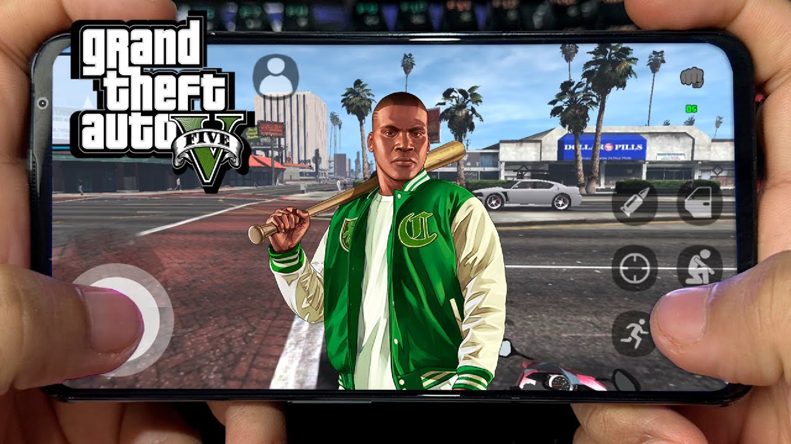

GTA 5 v2.0 APK - A Deep Dive Into the Mobile Crime Epic
1 Đoạn đầu tiên trước ảnh
Introduction to GTA 5 v2.0 APK
GTA 5 v2.0 APK is a mobile-adapted version of the classic title originally developed for consoles and PCs. While it doesn’t fully replicate every feature from the high-end platform version, it brings an impressively similar experience. The APK delivers an immersive narrative-driven adventure that follows the lives of three vastly different protagonists as they commit heists, evade law enforcement, and navigate the criminal underworld of Los Santos.
The city of Los Santos is a sprawling urban playground full of life, danger, and opportunity. Players can explore the city on foot, by car, on motorcycles, or even by air. The APK version has been optimized for mobile processors, offering enhanced frame rates, scaled graphics, and a redesigned user interface for touchscreen gameplay.
Storyline and Characters
The storyline of GTA 5 revolves around three main characters:
- Michael De Santa: A retired bank robber who now lives a luxurious but unsatisfying life in a Los Santos mansion. He’s trying to keep his family together while grappling with his past.
- Trevor Philips: A mentally unstable and violent criminal who used to be Michael’s partner. Now he runs his own criminal enterprise and creates chaos wherever he goes.
- Franklin Clinton: A young hustler from the streets trying to make a name for himself. Franklin wants to escape the gang life and climb the ladder in the criminal world.
The intertwining narrative of these three characters provides a dynamic and cinematic storytelling experience. Players can switch between the characters during missions or in free roam, which creates a multi-perspective view of the events unfolding in the game.
Gameplay Features
GTA 5 v2.0 APK brings a broad range of gameplay mechanics to the mobile space. Despite the limitations of mobile hardware, developers have optimized key features for a seamless experience.
Open World Exploration
One of GTA’s hallmark features is its expansive open world. In this mobile version, the city of Los Santos and its surrounding areas are rich with detail, including highways, suburbs, downtown streets, beaches, deserts, and mountains. Every location is filled with unique NPCs, side missions, and random events that bring the world to life.
Combat and Shooting
GTA 5 v2.0 includes a revamped combat system suitable for touchscreen play. Players can use a mix of melee weapons, firearms, and explosives. Auto-aim and on-screen controls allow for fluid gunfights, while crouching, cover mechanics, and stealth playstyles are all available.
Vehicles and Driving
Driving in GTA 5 is a core gameplay element, and the APK version includes a wide selection of cars, bikes, helicopters, boats, and even planes. Vehicle physics are adapted for mobile but still retain the arcade-realism blend the series is known for.
Heists and Missions
Heists are the centerpiece missions in GTA 5. Each heist involves planning, recruiting NPCs, acquiring gear, and then executing the job. Players experience adrenaline-pumping sequences like robbing banks, hijacking armored trucks, and engaging in shootouts.
Side missions, random events, and character-specific tasks expand the gameplay hours significantly, keeping players engaged beyond the main storyline.
Character Customization
Players can customize each character’s outfits, hairstyles, tattoos, and even physical conditioning. As you progress, skills like shooting, driving, flying, and stamina improve, making characters more effective in gameplay.
Graphics and Sound Design
GTA 5 v2.0 APK makes excellent use of mobile graphics technology. Though not as detailed as the console versions, the visuals are impressive, with high-resolution textures, dynamic lighting, weather effects, and realistic vehicle models.
The sound design features original voice acting, ambient noise, radio stations with licensed music, and realistic sound effects. The attention to audio detail contributes heavily to immersion.
User Interface and Controls
The mobile interface is designed for ease of use with virtual joysticks, buttons for shooting, sprinting, jumping, entering vehicles, and more. The layout can be customized, and some devices support external gamepad controllers for enhanced gameplay.
Menus are intuitive and allow easy access to missions, settings, maps, and inventory. The mini-map provides real-time updates on enemy positions, mission objectives, and navigation.
Performance and Optimization
GTA 5 v2.0 APK has been optimized for a wide range of Android devices. The game includes adjustable graphics settings, so users can tweak performance based on their hardware capabilities. It runs well on mid- to high-end smartphones, maintaining stable frame rates with minimal lag.
Battery usage is significant due to the high processing demands, but this is expected from a game of this caliber. Background processes are kept minimal to focus resources on gameplay.
Game Modes
The game primarily offers a single-player experience, focused on storytelling and exploration. While online multiplayer modes from the console/PC versions are not fully replicated in the APK, some fan-made servers or unofficial mods may offer limited online features.
Replayability
GTA 5 v2.0 APK is highly replayable thanks to its open-ended design. Players can return to previously completed missions, engage in side activities like races, assassination contracts, street fights, or just cause chaos in the city.
Exploration itself becomes a form of gameplay, with countless Easter eggs, hidden packages, and quirky characters hidden throughout Los Santos.
Compatibility and Requirements
The game is compatible with Android devices that meet minimum system requirements. Generally, a device should have:
- At least 4 GB of RAM
- Snapdragon 700+ series or equivalent processor
- 5 GB of free storage space
- Android 8.0 or higher
Devices with higher specifications will benefit from smoother gameplay and enhanced visual quality.
In-Game Economy and Items
Money plays a huge role in GTA 5. Players earn cash through missions, investments, robberies, and businesses. Money can be spent on properties, weapons, vehicles, clothing, and entertainment. The APK version retains these features, allowing users to feel the progression and rewards of successful heists.
Weapon and vehicle customization adds depth to the economy. Players can install upgrades, custom paint jobs, or performance parts to personalize their tools and rides.
Notable Differences from Console/PC Version
While GTA 5 v2.0 APK brings the core gameplay experience, there are some notable differences:
- Reduced map scale and detail due to hardware limitations
- Shortened cutscenes or simplified narrative arcs in some missions
- No official access to GTA Online
- Visual fidelity is adjusted for performance on mobile devices
However, for players seeking a portable version of GTA 5 that captures the spirit and chaos of the original, the APK version delivers remarkably well.
Community and Mod Support
GTA has a passionate modding community, and some mod support exists for the APK version. Users can find fan-created skins, textures, and mission packs that extend gameplay. While modding is unofficial and may impact performance or stability, it adds an extra layer of customization.
Conclusion
GTA 5 v2.0 APK is a bold attempt to bring the rich and chaotic world of Los Santos to mobile gamers. It captures much of the charm and thrill of the original, despite hardware limitations. With its deep narrative, diverse gameplay mechanics, rich customization, and high replayability, it stands out as one of the most ambitious open-world experiences available on Android.